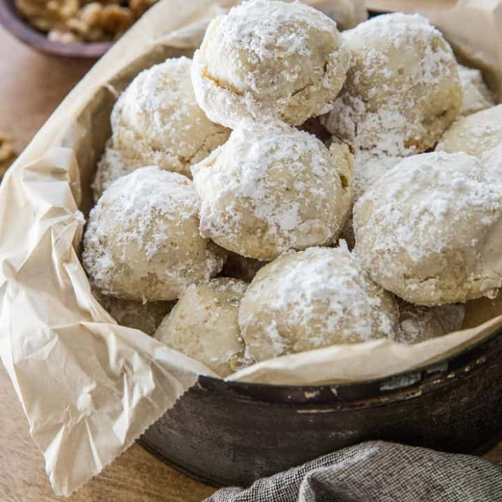

Russian Tea Cakes
This is THEAUNT708 from allrecipes.com's russian tea cake recipe.

Ingredients
- 1 cup unsalted butter, softened
- 1 teaspoon vanilla extract
- 2 cups all-purpose flour
- 6 tablespoons powdered sugar
- 1 cup finely chopped walnuts
- 1/3 cup powdered sugar, or more as needed
Steps
- Preheat the oven to 350 degrees F (175 degrees C).
- Cream butter and vanilla together in a medium bowl with an electric mixer until smooth, 2 to 3 minutes.
- Whisk flour and 6 tablespoons powdered sugar together in separate bowl. Add to the butter mixture and stir until just blended. Add walnuts and mix until incorporated; mixture may be crumbly.
- Take small scoops of dough and roll between your hands into 1-inch balls. Place balls 2 inches apart on ungreased cookie sheets.
- Bake in the preheated oven until edges are just turning golden, about 12 minutes.
- Remove from the oven and transfer to a wire rack to cool for 15 minutes.
- Place remaining 1/3 cup powdered sugar in a small bowl. Roll cooled cookies in the powdered sugar once or twice.